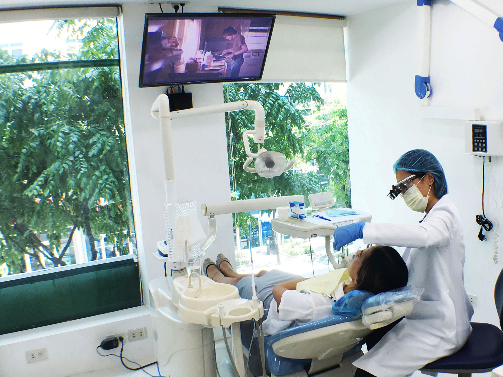
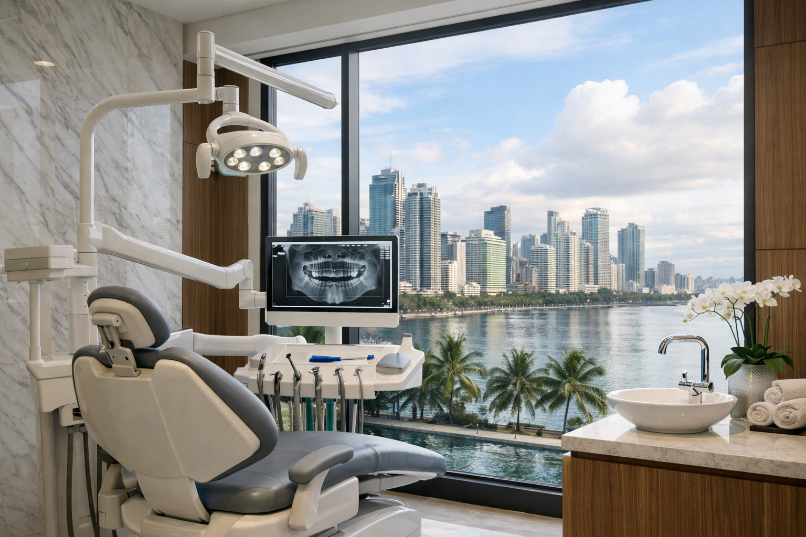

The examination
A specialist examines you and takes the imaging your case calls for. Nothing is priced before that has happened.
Treatment prices
Every treatment we offer has a published starting price.
A cleaning, a crown, a set of porcelain veneers, a full course of Invisalign (Clear Aligners): you can see where each one begins before you book anything.
The exact fee for your own case is confirmed in writing at your consultation, after a specialist has examined you.
All twenty figures on this page are representative figures anchored to published market ranges, and each one is labelled that way in its own cell. None of them is a fee Elevate has quoted.
Every one of them is listed in full further down this page.
All treatment is self-pay and settled directly with the clinic.
Case complexity, material choice, number of units, preparatory work.
Cash, bank cheque, bank transfer, cards, and QR payment.
We charge per treatment. You pay for the treatment you have, at the fee confirmed for your case, and nothing is bundled into a plan you did not ask for.

Three rules, and they hold on every row of the list
Before the first figure
Elevate Dental does not accept HMO or dental insurance. All treatment is self-pay. HMO coverage cannot be used for dental treatments at our clinics.
That sentence sits here, above the list, rather than under it. It is the first thing that changes the arithmetic, so it is the first thing stated.
Prices are grouped by the specialist discipline that carries out the treatment. Each row links to that treatment's own page, where the procedure, the timeline and the things that move the fee are set out in full.
Every figure in the tables below is a representative market figure drawn from published Philippine ranges, not a quoted Elevate Dental fee. The line under each number repeats that, row by row, so nothing here can be mistaken for a rate card. What you are charged is worked out at a consultation, from your own teeth rather than from this table.
| Treatment | Starting price |
|---|---|
| Oral prophylaxis (professional cleaning) | from₱2,500not an Elevate price |
| AirFlow (guided biofilm therapy) | from₱4,500not an Elevate price |
| Dental fillings, per tooth | from₱3,500not an Elevate price |
| Treatment | Starting price |
|---|---|
| Direct veneers (composite), per tooth | from₱12,000not an Elevate price |
| Porcelain veneers (Emax), per tooth | from₱35,000not an Elevate price |
| Zirconia veneers, per tooth | from₱38,000not an Elevate price |
| Zoom teeth whitening, one session | from₱25,000not an Elevate price |
| Treatment | Starting price |
|---|---|
| Dental crowns, per unit | from₱30,000not an Elevate price |
| Dental bridge | from₱23,000not an Elevate price |
| Complete dentures, per arch | from₱60,000not an Elevate price |
| Removable partial dentures | from₱25,000not an Elevate price |
| Treatment | Starting price |
|---|---|
| Invisalign (Clear Aligners), full course | from₱180,000not an Elevate price |
| Braces, full treatment | from₱90,000not an Elevate price |
| Treatment | Starting price |
|---|---|
| Dental implant, per implant | from₱90,000not an Elevate price |
| Oral surgery procedures, surgical extraction | from₱6,000not an Elevate price |
| Treatment | Starting price |
|---|---|
| Dental sealant | from₱1,500not an Elevate price |
| Fluoride treatment | from₱1,200not an Elevate price |
| Treatment | Starting price |
|---|---|
| Root canal treatment | from₱15,000not an Elevate price |
| Treatment | Starting price |
|---|---|
| Tooth scaling and root planing | from₱8,000not an Elevate price |
| Treatment | Starting price |
|---|---|
| Digital dental X-ray | from₱1,000not an Elevate price |
Imaging, quoted with the treatment
Diagnostic 3D CBCT imaging is available at all four clinics and is quoted with the treatment it is planned for.
Twenty starting prices is the whole published list. The twenty first figure belongs to your case alone, and that one takes an examination.
A starting price is honest only if you are told what moves it. Four things do.
None of the four is a surcharge and none of them appears after the fact. Each one is a line on the written quote you read before you agree to anything.
Which resolves to one line
Nothing is charged at the desk that was not on the quote you agreed to.
No card to present at the desk. No claim to file afterwards. No reimbursement to chase once it is over.
This is worth stating plainly on the page where you are working out what treatment will cost, because it changes the arithmetic. The figure you are quoted in writing is the figure you settle.
What you get in return is a fee set by your case and by nobody else, quoted in writing before treatment starts, with no third party deciding which treatment or which material you are entitled to.
If you are used to dental care being handled through a provider, raise it at your consultation. Our team will walk you through what your treatment costs and how it is settled, before you commit to anything.
Those three lines are the whole arrangement. There is no fourth line, no card to present, and nothing to reclaim afterwards.
Payment is settled at the clinic. Five methods are taken, and every fee is quoted and settled in Philippine pesos.
Cash
Settled at the desk on the day of treatment.
Bank cheque
Made out to the clinic and presented at the desk.
Bank transfer
Account details are handed over at the same time as the quote itself.
Debit and credit cards
Taken at the desk at the clinic you are treated in.
QR payment
Scanned and settled at the desk like any other method.
Philippine pesos
Fees are quoted and settled in Philippine pesos, rendered on this site with the peso glyph and thousands separators.

Some patients ask whether a larger course of treatment can be settled in stages rather than in a single payment.
Until that is confirmed, the honest answer is the one to give at the desk: ask at your consultation what settlement arrangements are available for your case.
If the figure you found here is higher than you expected, the next step is not to walk away from it. It is to find out what your case actually needs.
The examination
A specialist examines you and takes the imaging your case calls for. Nothing is priced before that has happened.
The findings
You are told what is wrong, what the options are, and which of them you can reasonably defer.
The written quote
You leave with a written quote covering each treatment discussed and the order it would happen in.
No commitment
Nothing is booked at that appointment. You take the quote away and decide.
The consultation is free, and it is the only way to turn a published figure into your own.
A published figure is not a quote, and this page has never pretended otherwise.
A patient deciding whether to treat a broken tooth or straighten a bite is deciding about money as much as about dentistry. Being made to book a consultation simply to find out whether a treatment is within reach is a poor way to begin a clinical relationship, and it wastes the patient's morning.
So we publish where every treatment begins. It is enough information to decide whether to take the next step, which is the only decision you are being asked to make right now.
The figure quoted after your examination may be higher than the starting price. If it is, you will be told why, in writing, before anything begins.
Nothing below is folded behind a control. Two of the four answers are still waiting on the owner, and both say so on their own face.
Yes. That first visit, and the pricing document you leave with, are provided at no charge. The offer itself is still waiting on owner confirmation, which is recorded beside this list.
The intended answer is that they do not: the same starting price applies at every one of the four clinics. That answer is held pending owner confirmation and is not published until it has been confirmed for all four sites.
The quote is itemized by treatment, with the sequence set out, so you can see what has to happen first and what can wait. Many cases are staged over several months for clinical reasons rather than financial ones, and your specialist will tell you which parts of your case are urgent and which are not.
Yes, and you should not accept a case without one. Every consultation ends with a written quote listing each treatment, the fee for each, and the order they happen in. Take it away and think about it.
You now know where each treatment starts. The only figure left is the one for your own case, and that takes an examination.
Book a free consultation at any of our four Metro Manila clinics. You leave with the fee set out in writing, an explanation of what is driving it, and no obligation to proceed.
Bring the row you were reading. The specialist whose discipline that treatment belongs to is the one who quotes it.

Outcome